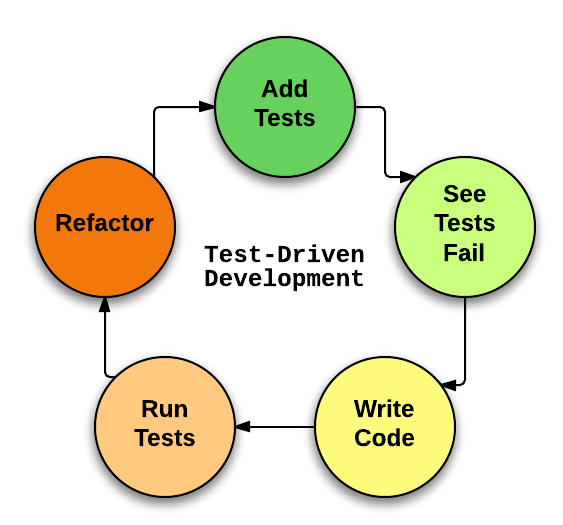

Тестирование програмного обеспечения
Как это?
Колмогорцев Дмитрий / dkolmogortsev@naumen.ru
План:
- Место тестирования при разработке
- Собственно, зачем тестировать?
- Виды тестирования
- Тесты как двигатель разработки
- Нагрузочное тестирование
Типичный жизненный цикл задачи
Что происходит при тестировании
Зачем тестировать?
Проверить, что багов нет!
А вот и нет!
Цели тестирования:
- Определить, что продукт соотвествует заявленным требованиям
- Адекватно работает при любом наборе входных данных
- Выдает результат за адекватное время
Ручное тестирование
- Довольно затратно
- Тестировать регрессию еще более затратно
- Порой имеет место человеческий фактор
Автоматизированное тестирование
- Тоже не бесплатно
- Тестировать регрессию почти ничего не стоит
- Суждение робота неизменно
- Человеческий фактор, все таки тоже имеет место быть
AT

Модульное тестирование
(Unit testing)

Sample
package org.testingtalk.account;
public class AccountInfoService
{
...
public AccountInfo createNewAccountInfo(){
AccountInfo newInfo = new AccountInfo(idSequence.getAndIncrement());
accountsData.put(newInfo.getAccountId(), newInfo);
return newInfo;
}
...
}
Как бы протестить?
- Подготовить данные
- Что-то сделать с данными
- Проверить результат дейсвтий
- Убрать за собой, если требуется
В первом приближении
public static void main(String[] args)
{
//Подготовка
AccountInfoService service = new AccountInfoService();
//Действия
AccountInfo info = service.createNewAccountInfo();
//Проверка
assert 0 == info.getBalance();
}
Почему?
- Не нужно переизобретать велосипед, всё уже придумано за вас
- Много инструментов тестирования
- У всех имеются гибкие проверки
- Поддерживаются всеми IDE
Популярные инструменты для АТ в Java
- JUnit
- Spock
- TestNG
Простейший тест
public class CalculatorTest {
@Test
public void testMultiply(){
Assert.assertEquals(4, new Calculator().multiply(2,2));
}
}
Пример JUnit теста
import static org.junit.Assert.*;
import org.junit.Test;
public class AccountInfoTest {
@Test
public void testNewInfoBalanceIsZero(){
//Подготовка
AccountInfoService service = new AccountInfoService();
//Действия
AccountInfo newInfo = service.createNewAccountInfo();
//Проверка
String message = "Balance is non zero"
assertEquals(message,0, newInfo.getBalance());
}
}
JUnit аннотации
public class BaseTest{
@BeforeClass //Действия перед запуском класса
public static void setupClass() {}
@Before //Действия перед зауском теста
public void setup() {}
@After //Действия после завершения теста
public void tearDown() {}
@AfterClass //Действия после завершения тестового класса
public void tearDownClass() {}
}
@Test
@Retention(RetentionPolicy.RUNTIME)
@Target({ElementType.METHOD})
public @interface Test {
//Какой Exception мы ожидаем при тесте
Class<? extends Throwable> expected() \
default Test.None.class;
long timeout() default 0L; //Таймаут выполнения теста
public static class None extends Throwable {
private static final long serialVersionUID = 1L;
private None() {}
}
}
Что может быть
public class AccountInfoServiceTest {
private AccountInfoService service;
@Before
public void setup(){
this.service = new AccountInfoService();
}
@Test(expected = IllegalArgumentException.class)
public void testErrorWhenLoadNull(){
this.service.getInfo(null);
}
@Test(timeout = 1000)
public void testLoadWithinASecond(){
this.service.get(1);
}
}
Виды проверок:
- assertEquals
- assertNotEquals
- assertTrue
- assertFalse
- assertThat
Интеграционное тестирование

Сервис переводов
public class TransferService {
...
public void makeTransfer(long sourceAccount,
long targetAccount,
double moneyAmount)
{
//Проверить аккаунт источник
//Проверить целевой аккаунт
//Проверить сумму перевода
//Проверить наличие суммы у аккаунта источника
//Выполнить перевод
}
...
}
Сервис переводов: инициализация, поля
public class TransferService {
private final AccountInfoService accountInfoService;
private final TransferLogService logService;
private int successFullTransfers = 0;
private int failedTransfers =0;
...
}
Сервис переводов: инициализация, конструктор
public class TransferService {
...
public TransferService(AccountInfoService accountInfoService,
TransferLogService logService)
{
this.accountInfoService = accountInfoService;
this.logService = logService;
}
...
}
Сервис переводов. перевод
public class TransferService
{
...
public void makeTransfer(long sourceAccount,
long targetAccount,
double moneyAmount)
{
//Проверить аккаунт источник
if(sourceAccount <= 0){
throw new IllegalArgumentException("Invalid source account id: "
+ sourceAccount);
}
//Проверить целевой аккаунт
//Проверить сумму перевода
//Проверить наличие суммы у аккаунта источника
//Выполнить перевод
}
...
}
Сервис переводов. перевод
public class TransferService
{
...
public void makeTransfer(long sourceAccount,
long targetAccount,
double moneyAmount)
{
//Проверить аккаунт источник
//Проверить целевой аккаунт
if(targetAccount <= 0){
throw new IllegalArgumentException("Invalid target account id: "
+targetAccount);
}
//Проверить сумму перевода
//Проверить наличие суммы у аккаунта источника
//Выполнить перевод
}
...
}
Сервис переводов. перевод
public class TransferService
{
...
public void makeTransfer(long sourceAccount,
long targetAccount,
double moneyAmount)
{
//Проверить аккаунт источник
//Проверить целевой аккаунт
if(moneyAmount <= 0){
throw new IllegalArgumentException("Non positive transfer amount
is specified");
}
//Проверить наличие суммы у аккаунта источника
//Выполнить перевод
}
...
}
Сервис переводов. перевод
public class TransferService
{
...
public void makeTransfer(long sourceAccount, long targetAccount, double moneyAmount)
{
//Проверить аккаунт источник
//Проверить целевой аккаунт
//Проверить сумму перевода
//Проверить наличие суммы у аккаунта источника
AccountInfo fromAccountInfo = accountInfoService.getInfo(sourceAccount);
if (fromAccountInfo.getCurrentBalance() < moneyAmount)
{
throw new UnsupportedOperationException("Not enough credit balance");
}
//Выполнить перевод
}
...
}
Сервис переводов. перевод
public class TransferService
{
...
public void makeTransfer(long sourceAccount, long targetAccount, double moneyAmount)
{
...
//Выполнить перевод
try
{
performTransfer(sourceAccount, targetAccount, moneyAmount, fromAccountInfo);
logService.logTransfer(sourceAccount, targetAccount, moneyAmount);
successFullTransfers++;
}
catch (Exception e)
{
failedTransfers ++;
e.printStackTrace();
}
}
}
Как быть с зависимостями?
- Удовлетворять зависимости реальными объектами
- Использовать ненастоящие объекты
Тест с реальными объектами: подготовка
@Test
public void transferTest(){
//Подготовка
AccountInfoService service = new AccountInfoServiceImpl();
AccountInfo sourceInfo = service.createNewAccountInfo();
service.updateBalance(sourceInfo.getAccountId(), 10.0);
AccountInfo targetInfo = service.createNewAccountInfo();
TransferService transferService = new TransferService(service,
new TransferLogService());
...
}
Тест с реальными объектами: действия
@Test
public void transferTest(){
...
//Действия
transferService.makeTransfer(sourceInfo.getAccountId(), targetInfo.getAccountId(), 5.0);
...
}
Тест с реальными объектами: проверки
@Test
public void transferTest(){
...
//Проверки
Assert.assertEquals(1, transferService.getSuccessFullTransfers());
Assert.assertEquals(5.0,
service.getInfo(sourceInfo.getAccountId()).getCurrentBalance(), 0.0);
Assert.assertEquals(5.0,
service.getInfo(targetInfo.getAccountId()).getCurrentBalance(), 0.0);
}
Тест с реальными объектами: всё вместе
@Test
public void transferTest(){
//Подготовка
AccountInfoService service = new AccountInfoServiceImpl();
AccountInfo sourceInfo = service.createNewAccountInfo();
service.updateBalance(sourceInfo.getAccountId(), 10.0);
AccountInfo targetInfo = service.createNewAccountInfo();
TransferService transferService = new TransferService(service, new TransferLogService());
//Действия
transferService.makeTransfer(sourceInfo.getAccountId(), targetInfo.getAccountId(), 5.0);
//Проверки
Assert.assertEquals(1, transferService.getSuccessFullTransfers());
Assert.assertEquals(5.0,
service.getInfo(sourceInfo.getAccountId()).getCurrentBalance(), 0.0);
Assert.assertEquals(5.0,
service.getInfo(targetInfo.getAccountId()).getCurrentBalance(), 0.0);
}
Ненастоящие объекты
- Stub - Заглушка с заранее заданным поведением.
- Mock - тоже заглушка, но настраиваемая под каждый тест
Stub
Верифицируется( проверяется ) состояние тестового класса
Заглушка сервиса хранения данных аккаунтов
public class AccountInfoStub implements AccountInfoService
{
private final static AccountInfo STUB = new AccountInfo(999, 10.00);
private final static AccountInfoStub INSTANCE = new AccountInfoStub();
private AccountInfoStub() { }
public static AccountInfoStub get() { return INSTANCE; }
@Override
public AccountInfo createNewAccountInfo() { return STUB.clone(); }
...
@Override
public AccountInfo getInfo(long id) { return STUB.clone(); }
}
Тест с использованием заглушки
@Test
public void testSuccessfullTransfers() throws Exception
{
TransferService transfers = new TransferService(AccountInfoStub.get(),
new TransferLogService());
transfers.makeTransfer(1, 2, 2.0);
Assert.assertEquals(1, transfers.getSuccessFullTransfers());
}
Mock - прокачанная заглушка
Используется для верификации поведения

Тест с использованием умной-заглушки
@Test
public void testTransferLogged(){
//Подготовка
TransferLogService mockedLogService = Mockito.mock(TransferLogService.class);
TransferService transfers = new TransferService(AccountInfoStub.get(), mockedLogService);
//Действия
transfers.makeTransfer(1, 2, 2.0);
//Проверка
//Проверяем, что метод logTransfer вызвался единожды с аргументами 1, 2, 2.0
Mockito.verify(mockedLogService, Mockito.times(1)).logTransfer(1,2,2.0);
}
Еще один пример умной заглушки: подготовка
@Test
public void testFailedTransfer(){
//Подготовка
AccountInfoService mockInfoService = Mockito.mock(AccountInfoService.class);
Mockito.when(mockInfoService.getInfo(1)).thenReturn(new AccountInfo(1, 10.0));
Mockito.when(mockInfoService.getInfo(2)).thenThrow(RuntimeException.class);
TransferService transferService = new TransferService(mockInfoService,
new TransferLogService());
...
}
Еще один пример умной заглушки: действия
@Test
public void testFailedTransfer(){
...
//Действия
transferService.makeTransfer(1,2, 2.0);
...
}
Еще один пример умной заглушки: проверки
@Test
public void testFailedTransfer(){
...
//Проверки
Assert.assertEquals(1, transferService.getFailedTransfers());
}
Еще один пример умной заглушки
@Test
public void testFailedTransfer(){
//Подготовка
AccountInfoService mockInfoService = Mockito.mock(AccountInfoService.class);
Mockito.when(mockInfoService.getInfo(1)).thenReturn(new AccountInfo(1, 10.0));
Mockito.when(mockInfoService.getInfo(2)).thenThrow(RuntimeException.class);
TransferService transferService = new TransferService(mockInfoService,
new TransferLogService());
//Действия
transferService.makeTransfer(1,2, 2.0);
//Проверки
Assert.assertEquals(1, transferService.getFailedTransfers());
}
Функциональное тестирование ( UI )
Selenium
Инcтрумент для автоматизированного тестирования WEB-приложений- Selenium WebDriver
- Selenium Grid
Selenium Webdriver
- Реализация на многих языках
- Из коробки поддерживает управление Firefox
- Можно научить управлять даже IE
Тестируем гугл: открываем браузер
// Создаем новый webdriver с указанием geckodriver
System.setProperty("webdriver.gecko.driver", "${ путь до geckodriver }");
System.setProperty("webdriver.firefox.bin", "${ путь до firefox }");
WebDriver wd = new FirefoxDriver();
Тестируем гугл: открываем гугл
// Открываем гугл
wd.get("http://www.google.com");
Тестируем гугл:ищем в гугле selenium
final String searchString = "selenium";
// Находим поисковую строку и ищем "selenium"
WebElement searchBox = wd.findElement(By.name("q"));
searchBox.sendKeys(searchString);
searchBox.submit();
Тестируем гугл: ждем поисковой выдачи
// т.к. google асинхронный - ждем поисковой выдачи
(new WebDriverWait(wd, 10)).until(new ExpectedCondition<Boolean>() {
public Boolean apply(WebDriver d) {
return d.getTitle().toLowerCase().startsWith(searchString);
}
});
Тестируем гугл: закрываем браузер
// закрываем webdriver
wd.quit();
Тестируем гугл
public class SeleniumTest
{
@Test
public void googleTest() throws Exception{
// Создаем новый webdriver с указанием geckodriver
System.setProperty("webdriver.gecko.driver", "${ путь до geckodriver }");
System.setProperty("webdriver.firefox.bin", "${ путь до firefox }");
WebDriver wd = new FirefoxDriver();
// Открываем гугл
wd.get("http://www.google.com");
final String searchString = "selenium";
// Находим поисковую строку и ищем "selenium"
WebElement searchBox = wd.findElement(By.name("q"));
searchBox.sendKeys(searchString);
searchBox.submit();
// т.к. google асинхронный - ждем поисковой выдачи
(new WebDriverWait(wd, 10)).until(new ExpectedCondition<Boolean>() {
public Boolean apply(WebDriver d) {
return d.getTitle().toLowerCase().startsWith(searchString);
}
});
// закрываем webdriver
wd.quit();
}
}
Первое правило тестов
Тесты должны быть изолированны и не мешать друг другу
Когда тесты запускать?
- Всегда
- Написал код - запусти тесты
- При сборке проекта
- В CI
А как понять что я достаточно написал?
Измерить покрытие кода
Покрытие кода
Кол-во кода в % во время выполнения тестирования
- покрытие операторов — каждая ли строка исходного кода была выполнена и протестирована;
- покрытие условий — каждая ли точка решения (вычисления истинно ли или ложно выражение) была выполнена и протестирована;
- покрытие путей — все ли возможные пути через заданную часть кода были выполнены и протестированы;
- покрытие функций — каждая ли функция программы была выполнена;
- покрытие вход/выход — все ли вызовы функций и возвраты из них были выполнены.
- покрытие значений параметров — все ли типовые и граничные значения параметров были проверены.
JaCoCo
org.jacoco
jacoco-maven-plugin
0.7.9
JaCoCo: результат
mvn clean installТесты как двигатель разработки
Про модульное тестирование
Плюсы и минусы
- + Код не страшно рефакторить
- + Помогает сразу визуализировать, то, что должен делать код
- + Более гибкий и расшяремый код
- + Самодокументированный код
- - Если автор кода что-то не так понял, то и тесты тестируют не то
Разработка через поведение
- Появилось из TDD
- Тесты = описание поведения
- Тесты могут писать не только разработчики
- Используется почти естественный язык
Сценарий
Scenario: ищем в интернете
Given: Я открываю www.google.com
When: В поисковую строку я ввожу "java"
Then: Я вижу в поисковой выдаче "java.com"
В коде:
public class SearchSteps {
@Given("Я открываю (.*)")
public void openUrl(String url) { ... }
@When("В поисковую строку я ввожу (.*)")
public void search(String searchString) { ... }
@Then("Я вижу в поисковой выдаче (.*)")
public void searchResults(String expectedSearchResult) { ... }
}
Тесты
- Экономят время
- Тестируют больше
- Проверяют непреклонно
- Гибкий и читаемый код в итоге
Нагрузочное тестирование
Проблема
- Написана новая версия продукта - 4.0 (прошлая 3.8)
- Старой пользуется много крупных клиентов(большое кол-во пользователей одновременно)
- Новый продукт, конечно, прекрасен, но мы не знаем насколько хорошо он работает
- Нужно сэмулировать работу пользователей
Тестирование производительности
Проверить как быстро может работать система или её компоненты
Что можно проверить:
- Время отклика
- Время отображения
- Пропускную способность
Время отклика

Время отображения
Пропускная способность
Виды тестирования производительности:
- Нагрузочное(load)
- Стресс (stress)
Нагрузочное тестирование
Цель: проверить показатели работы приложения при ожидаемой нагрузкеСтресс тестирование
Цель: проверить показатели работы приложения при диспропорциональной нагрузкеStress in a nutshell
Процесс проведения
- Определяем требуемые показатели
- Определяем сценарий нагрузочного тестирования
- Проводим тестирование*
- Собираем результат
- ??????
- PROFIT, а может и нет
*Проводить тестирование всегда стоит на одном и том же сервере
JMeter
Умеет тестировать:
- Web
- JDBC
- и другое
Получаем сценарий
Два пути:
- Написать запросы руками
- Записать сценарий из браузера
Запись сценария

Далее
- Воспроизводим сценарий
- Анализируем результат
- Радуемся или нет